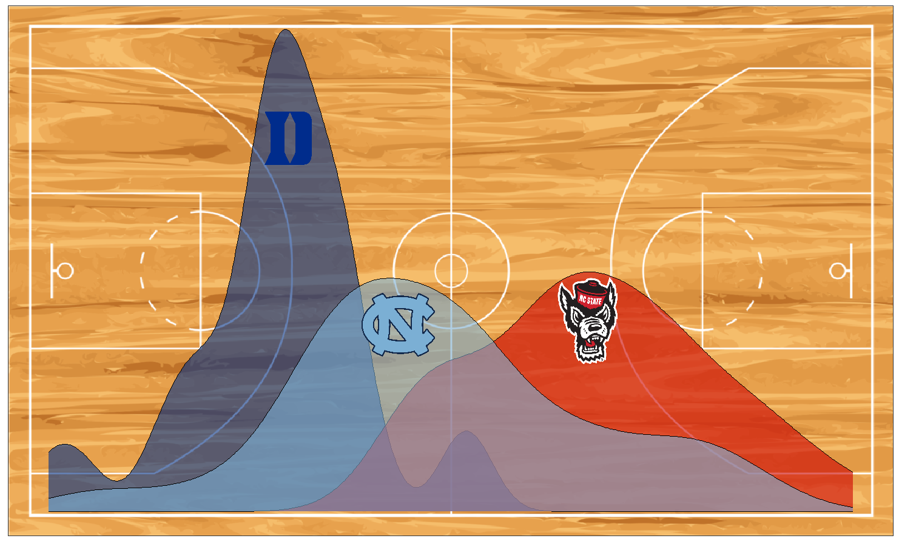

<<<<<<< HEAD
Triangle Sports Analytics Competition
This website will update in real time with the latest information about the competition. Registration for 2024-2025 season has closed.
=======This website will update in real time with the latest information about the competition. Please register if you are interested in participating, and be on the look out for emails!
Register now here!
>>>>>>> 9f2456543b8cf53b9d268ebc4ee48fd787621ccb
Statement of purpose
<<<<<<< HEADThe Triangle Sports Analytics Competition aims to bring together students who love sports analytics to compete in a prediction contest. Students may work individually or in a team of 2-5. All submissions will be due January 10th. Read details about the contest on the Task page.
=======The Triangle Sports Analytics Competition aims to bring together students who love sports analytics to compete in a prediction contest. Students may work individually or in a team of 2-5. All submissions will be due January 10th. Read details about the contest on the Task page.
Timeline
Dates to be finalized.
September 2024
- Registration begins
October 2024
- Attend info session
- Duke: Friday, October 25 @ 5:15PM in Old Chem 116
- NC State: Friday, October 25 @ 4:00PM on Zoom (check email for information)
- UNC: Friday, October 18 @ 5:00PM on Zoom (Passcode: 045494 )
November 2024
Drop-in office hours
Pre-event workshops (Duke):
- Intro to Basketball Analytics and R Refresh - Sunday, November 10 @ 12:00pm in Reuben-Cooke 129
- Model Example Walkthrough - Sunday, November 17 @ 12:00pm in Reuben-Cooke 129
January 10, 2025: Submissions Due by Midnight
April 2025: Award ceremony
Register now here!
>>>>>>> 9f2456543b8cf53b9d268ebc4ee48fd787621ccbLeaderboard
Coordinators

Duke University
Alexander Fisher aaf29@duke.edu
University of North Carolina
Mario Giacomazzo mgiacoma@email.unc.edu
North Carolina State University
Elijah Meyer esmeyer2@ncsu.edu